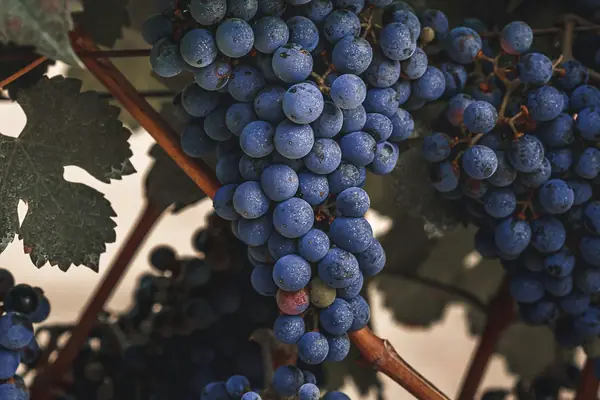

Merlot grape

Photo: Mauro Lima on Unsplash
Merlot is a red grape known for plum, cherry, chocolate. Its best-known homes are Bordeaux, Tuscany, Washington.
Origin and history
From Bordeaux, first recorded in the late 1700s; a child of Cabernet Franc and the rare Magdeleine Noire des Charentes.
Where it grows
Bordeaux's Right Bank (Pomerol, Saint-Émilion), Washington State, Chile, Tuscany (Bolgheri), Napa Valley and northern Italy.
Structure
Medium to full body, soft medium tannins and medium acidity: rounder and plusher than Cabernet.
Aromas, young and aged
Young: plum, black cherry, blackberry and chocolate. With age: fruitcake, leather, truffle and earth.
Ageing
Most Merlot drinks best within 2–6 years; great Pomerol (such as Pétrus) can age for decades.
Also known as
Merlot Noir.
Good to know
Bordeaux's most planted grape; it ripens earlier than Cabernet, so it thrives on cooler clay soils.
Wine regions for Merlot
Merlot wines to try
Real bottles from The Wine Library.
Château Margaux Château Margaux
Bordeaux · Margaux · Cabernet Sauvignon, Merlot
Perfumed and silky: cassis, violets, cedar and fine tannins that age for decades.
Food: Roast lamb, beef Wellington
Château Lynch-Bages Château Lynch-Bages
Bordeaux · Pauillac · Cabernet Sauvignon, Merlot
Rich Pauillac: blackcurrant, mint, graphite and toasty oak.
Food: Ribeye steak, roast lamb
Yarra Yering Dry Red Wine No. 1
Yarra Valley · Cabernet Sauvignon, Merlot, Malbec, Petit Verdot
Bordeaux-style blend: blackcurrant, cedar, violets and fine tannins.
Food: Roast beef, lamb
Mission Hill Oculus
Okanagan Valley · Merlot, Cabernet Sauvignon, Cabernet Franc
Canada's flagship Bordeaux blend: dark berries, cedar, mocha and fine structure.
Food: Beef tenderloin, venison, mushrooms
Baron Philippe de Rothschild Mouton Cadet Rouge
Bordeaux · Merlot, Cabernet Sauvignon, Cabernet Franc
Easy everyday claret: red berries, plum and soft tannins.
Food: Roast chicken, burgers, pâté
Cullen Diana Madeline
Margaret River · Wilyabrup · Cabernet Sauvignon, Merlot
Biodynamic Margaret River blend: cassis, mulberry, bay leaf and fine tannins.
Food: Lamb rack, beef fillet, mushrooms
Château Siran Saint-Jacques de Siran
Bordeaux · Bordeaux Supérieur · Merlot, Cabernet Sauvignon
Château Siran's approachable red: plum and soft tannins.
Food: Burgers, charcuterie
Château Beaumont Haut-Médoc
Bordeaux · Haut-Médoc · Cabernet Sauvignon, Merlot
Classic Haut-Médoc: blackcurrant, cedar and medium body.
Food: Lamb, steak
Château Cos d'Estournel G d'Estournel
Bordeaux · Médoc · Merlot, Cabernet Sauvignon
Médoc red from the Cos d'Estournel team: ripe and supple.
Food: Steak, duck
Château Siran Margaux
Bordeaux · Margaux · Cabernet Sauvignon, Merlot, Petit Verdot
Fragrant Margaux: violets, cassis and fine tannins.
Food: Lamb, beef
Château Lafite Rothschild Carruades de Lafite
Bordeaux · Pauillac · Cabernet Sauvignon, Merlot
Lafite's second wine: cedar, cassis and elegance.
Food: Rack of lamb
Château de Pez 2nd de Pez
Bordeaux · Saint-Estèphe · Cabernet Sauvignon, Merlot
Second wine of de Pez: firm, fresh Saint-Estèphe.
Food: Steak, lamb
Château Montrose La Dame de Montrose
Bordeaux · Saint-Estèphe · Cabernet Sauvignon, Merlot
Montrose's second wine: dense blackcurrant and graphite.
Food: Beef, lamb
Château Smith Haut Lafitte Les Hauts de Smith
Bordeaux · Pessac-Léognan · Cabernet Sauvignon, Merlot
Second wine of Smith Haut Lafitte: smoky, ripe and polished.
Food: Duck, lamb
Château La Mission Haut-Brion Grand Vin
Bordeaux · Pessac-Léognan · Cabernet Sauvignon, Merlot
Great Graves red: smoke, tobacco, dark fruit and power.
Food: Beef Wellington, game
Château Tour Saint Christophe Saint-Émilion Grand Cru
Bordeaux · Saint-Émilion · Merlot, Cabernet Franc
Limestone-terrace Saint-Émilion: fresh, ripe and modern.
Food: Duck, lamb
Château Beauséjour Bécot Saint-Émilion 1er Grand Cru Classé
Bordeaux · Saint-Émilion · Merlot, Cabernet Franc
Plateau limestone Saint-Émilion: plush fruit and freshness.
Food: Lamb, beef
Château Troplong Mondot Mondot
Bordeaux · Saint-Émilion · Merlot, Cabernet Sauvignon
Second wine of Troplong Mondot: fresh red and dark fruit.
Food: Roast chicken, lamb
Château Troplong Mondot Saint-Émilion 1er Grand Cru Classé
Bordeaux · Saint-Émilion · Merlot, Cabernet Franc, Cabernet Sauvignon
From Saint-Émilion's highest point: dark fruit, freshness and structure.
Food: Beef, game
Château Beauséjour (Duffau-Lagarrosse) Saint-Émilion 1er Grand Cru Classé
Bordeaux · Saint-Émilion · Merlot, Cabernet Franc
Limestone-plateau Saint-Émilion: elegant, mineral and long.
Food: Lamb, veal
Château Cheval Blanc Grand Vin
Bordeaux · Saint-Émilion · Cabernet Franc, Merlot
Iconic Saint-Émilion with high Cabernet Franc: silky, fragrant and timeless.
Food: Roast lamb, truffle
Château L'Évangile Pomerol
Bordeaux · Pomerol · Merlot, Cabernet Franc
Opulent Pomerol: plum, truffle and velvety tannins.
Food: Beef, mushrooms
Château La Conseillante Pomerol
Bordeaux · Pomerol · Merlot, Cabernet Franc
Silky, perfumed Pomerol with violets and red fruit.
Food: Lamb, duck
Château Lafleur Pomerol
Bordeaux · Pomerol · Merlot, Cabernet Franc
Tiny, revered Pomerol estate: intense, complex and very long-lived.
Food: Game, beef
Château Siaurac Lalande-de-Pomerol
Bordeaux · Lalande-de-Pomerol · Merlot, Cabernet Franc
Supple, plummy neighbour of Pomerol.
Food: Duck, lamb
Château Mouton Rothschild Grand Vin
Bordeaux · Pauillac · Cabernet Sauvignon, Merlot
Pauillac first growth with artist labels: opulent cassis and spice.
Food: Rack of lamb
Château Latour Grand Vin
Bordeaux · Pauillac · Cabernet Sauvignon, Merlot
Powerful, long-lived Pauillac first growth.
Food: Beef, lamb
Château Haut-Brion Grand Vin
Bordeaux · Pessac-Léognan · Merlot, Cabernet Sauvignon, Cabernet Franc
The Graves first growth: smoky, earthy and refined.
Food: Game, beef
Château Pichon Longueville Comtesse de Lalande Grand Vin
Bordeaux · Pauillac · Cabernet Sauvignon, Merlot
Seductive, Merlot-rich Pauillac: silky and perfumed.
Food: Lamb, duck
Château Pichon Baron Grand Vin
Bordeaux · Pauillac · Cabernet Sauvignon, Merlot
Powerful Pauillac: blackcurrant, cedar and firm tannins.
Food: Steak, lamb
Château Cos d'Estournel Grand Vin
Bordeaux · Saint-Estèphe · Cabernet Sauvignon, Merlot
Exotic, spicy Saint-Estèphe second growth.
Food: Beef, lamb
Château Léoville Las Cases Grand Vin
Bordeaux · Saint-Julien · Cabernet Sauvignon, Merlot, Cabernet Franc
Classic, structured Saint-Julien built for long ageing.
Food: Lamb, beef
Château Lagrange Saint-Julien
Bordeaux · Saint-Julien · Cabernet Sauvignon, Merlot
Saint-Julien third growth: balanced and fresh.
Food: Lamb, steak
Château Cantenac Brown Margaux
Bordeaux · Margaux · Cabernet Sauvignon, Merlot
Margaux third growth: firm, floral and dark-fruited.
Food: Lamb, beef
Château Palmer Margaux
Bordeaux · Margaux · Merlot, Cabernet Sauvignon, Petit Verdot
Iconic Margaux: silky, perfumed and complex.
Food: Lamb, duck
Château Talbot Saint-Julien
Bordeaux · Saint-Julien · Cabernet Sauvignon, Merlot
Generous Saint-Julien fourth growth: cassis and cedar.
Food: Lamb, beef
Château Batailley Pauillac
Bordeaux · Pauillac · Cabernet Sauvignon, Merlot
Traditional Pauillac fifth growth: firm and classic.
Food: Steak, lamb
Mazzei Ser Lapo Chianti Classico Riserva
Tuscany · Chianti Classico · Sangiovese, Merlot
Polished Riserva: cherry, spice and fine oak.
Food: Steak, wild boar
Tenuta Luce Luce
Tuscany · Toscana IGT · Sangiovese, Merlot
Sangiovese-Merlot blend: rich, velvety and spicy.
Food: Lamb, steak
Tenuta dell'Ornellaia Ornellaia
Tuscany · Bolgheri Superiore · Cabernet Sauvignon, Merlot, Cabernet Franc
Bolgheri icon: opulent dark fruit, spice and fine tannins.
Food: Beef, lamb
Tua Rita Redigaffi
Tuscany · Toscana IGT · Merlot
Cult Tuscan Merlot: dense, velvety and powerful.
Food: Beef fillet, game
Bodega Pirineos 3404 Tinto
Somontano · Moristel, Cabernet Sauvignon, Merlot
Fresh Pyrenean-foothills red.
Food: Tapas, pizza
Craggy Range Sophia
Hawke's Bay · Gimblett Gravels · Merlot, Cabernet Franc
Bordeaux-style blend from the Gimblett Gravels.
Food: Beef, lamb
Meerlust Red
Stellenbosch · Cabernet Sauvignon, Merlot
Classic Stellenbosch Bordeaux-style blend.
Food: Steak, lamb
Vilafonté Seriously Old Dirt
Paarl · Cabernet Sauvignon, Merlot, Malbec
Ripe, polished Cape blend.
Food: Lamb, steak
Vilafonté Series M
Paarl · Merlot, Malbec, Cabernet Sauvignon
Plush, Merlot-Malbec Cape blend.
Food: Beef, game
Harlan Estate Harlan Estate
Napa Valley · Cabernet Sauvignon, Merlot
Napa cult icon: opulent, layered and long-lived.
Food: Beef, truffle
Falesco Montiano
Velvety Merlot of plum, black cherry and mocha with a fresh, sapid finish from volcanic soils near Lake Bolsena.
Food: Saltimbocca alla romana
Rustenberg John X Merriman
Stellenbosch · Simonsberg-Stellenbosch · Merlot, Cabernet Sauvignon, Petit Verdot
Bordeaux-style blend with plum, cassis and cedar, plush in the middle and finishing with fine, dusty tannins.
Food: Lamb chops, venison pie
Lapostolle Clos Apalta
Colchagua Valley · Apalta, Colchagua Valley · Carménère, Cabernet Sauvignon, Merlot
Carménère-led flagship from the horseshoe-shaped Apalta hills: blackcurrant, cocoa, paprika and sweet spice, plush and powerful yet with a fresh, granitic grip.
Food: Slow-roast beef short rib
De Stefani Solèr
Veneto · Veneto, Piave Valley (Le Ronche estate) · Merlot, Cabernet Sauvignon, Carménère, Refosco, Marzemino
Five-grape blend with part of the grapes dried in the loft (solèr): round, spicy, liquorice notes.
Food: Stuffed pasta, grilled meat
De Stefani Venezia
Veneto · Venezia DOC · Merlot, Cabernet Sauvignon
Barrique-aged Bordeaux-style blend of Merlot and Cabernet Sauvignon.
Food: Tagliatelle al ragù, roast meat
De Stefani Redentore Merlot
Round Merlot with raspberry, violet and cherry.
Food: Stews, roast beef, pork
De Stefani Naturalmente Rosso
Veneto · Veneto, Piave Valley (Le Ronche estate) · Merlot, Raboso
Low-intervention red: long skin contact, wild yeasts, no filtration.
Food: Charcuterie, pasta
De Stefani DS Terre Nobili
Veneto · Veneto IGT · Cabernet Sauvignon, Merlot, Raboso
Smooth blend with raspberry, spice and chocolate and velvety tannins.
Food: Grilled and stewed meat, lamb
De Stefani Zero Red
Veneto · Alcohol-free (dealcoholised, under 0.5%) · Merlot, Refosco
Alcohol-removed Merlot and Refosco: ripe red fruit, light spice, soft body.
Food: Fresh cheese, legumes
Bleasdale Frank Potts
Langhorne Creek · Langhorne Creek GI · Cabernet Sauvignon, Malbec, Petit Verdot, Merlot
Cabernet-led blend named after the estate's founder, with blackcurrant, violet and mint over polished, generous tannins.
Food: Beef wellington
Mount Mary Quintet
Yarra Valley · Yarra Valley GI · Cabernet Sauvignon, Merlot, Cabernet Franc, Malbec, Petit Verdot
Restrained, elegant five-variety Bordeaux blend: redcurrant, cedar and violets with gentle, fine-grained tannins.
Food: Roast lamb, beef Wellington
Food to pair with Merlot
- Roast chicken: Roast chicken is a versatile partner; lightly oaked Chardonnay or a soft, low-tannin Pinot Noir or Merlot suits crisp skin and savoury gravy.
- Cheese board: Mixed cheeses need a mixed line-up: Riesling for soft and blue cheeses, soft Merlot for hard cheeses, and Prosecco's bubbles to refresh.
- Roast leg of lamb: Lamb's rich fat and rosemary call for structured reds; Cabernet's cassis and cedar and Rioja's savoury oak are the classic partners.
- Toad in the hole: Soft, juicy Merlot and Grenache have enough fruit for pork sausages and onion gravy, with gentle tannins that suit the batter.
- Duck breast with cherry sauce: Pinot Noir's cherry fruit echoes the sauce and its acidity cuts rich duck fat, while plush Merlot suits the sweeter side of the dish.
- Beef Wellington: Tender fillet and mushroom duxelles suit a structured but polished red; Bordeaux or Burgundy matches the richness without overpowering the pastry.
- Pheasant casserole: Earthy, gamey notes in pheasant meet the forest-floor character of mature Pinot Noir or the savoury spice of northern Rhône Syrah.
- Steak and ale pie: Structured, savoury reds stand up to slow-braised beef and the malty depth of an ale gravy under buttery pastry.
Appellations that use Merlot
- Somontano DO · Somontano · Red
- Pauillac AOC · Bordeaux · Red
- Curtefranca DOC · Lombardy · White, Red
- Garda DOC · Lombardy · White, Red, Rosé, Sparkling, Sweet
- Garda Colli Mantovani DOC · Lombardy · White, Red
- Terre del Colleoni DOC · Lombardy · White, Red
- Valcalepio DOC · Lombardy · White, Red, Sweet
- Casteller DOC · Trentino-Alto Adige · Red
- Colli di Conegliano DOCG · Veneto · White, Red, Sweet
- Montello Rosso DOCG · Veneto · Red
- Arcole DOC · Veneto · White, Red
- Breganze DOC · Veneto · White, Red, Sparkling, Sweet
- Colli Berici DOC · Veneto · White, Red, Rosé, Sparkling, Sweet
- Colli Euganei DOC · Veneto · White, Red, Sparkling, Sweet
Wine stories about Merlot
Similar red grapes
Explore all grapes in the interactive guide
The Wine Reference newsletter
New wines, stories and career guides, one email a week at most.
Over 18s only. Unsubscribe any time with one click. Your email is stored securely by Kit and never shared.
Support The Wine Reference
This guide is free, with no paywall. If it helped you choose a bottle, you can buy me a glass and keep it growing.
🍷 Buy me a glass